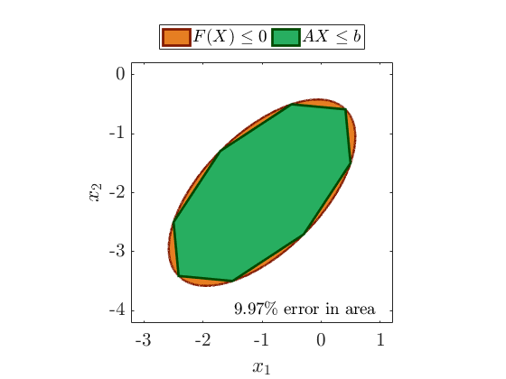
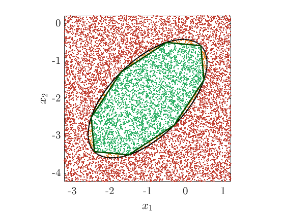
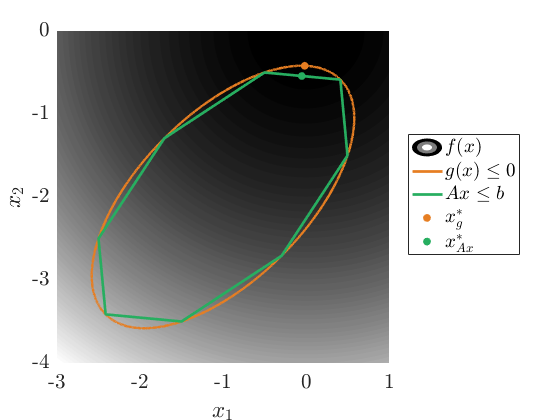

Contents
%-------------------------------------------------------------------------- % testEllipseConstraints.m % Test file demonstrating the functions included in this submission %-------------------------------------------------------------------------- % testEllipseConstraints %-------------------------------------------------------------------------- % Author: Daniel R. Herber, Graduate Student, University of Illinois at % Urbana-Champaign % Date: 04/12/2016 %--------------------------------------------------------------------------
Demonstrates the generation of the linear constraints
% ellipse parameters h = -1; k = -2; a = 2; b = 1; p = pi/4; % number of unique points to use N = 8; % generate approximate ellipse points [X,Y] = genEllipsePoints(h,k,a,b,p,N); % generate A and B matrix for A*X <= B [A,B] = vertxy2lcon(X,Y); disp('[A B]') disp([A B])
[A B]
0.0858 0.9142 -0.5000
-0.7929 1.2071 -0.2071
-1.2071 0.7929 1.0355
-0.9142 -0.0858 2.5000
-0.0858 -0.9142 3.3284
0.7929 -1.2071 3.0355
1.2071 -0.7929 1.7929
0.9142 0.0858 0.3284
Figures that visualize the difference
% original ellipse points [Xo,Yo] = genEllipsePoints(h,k,a,b,p,10000); % plot to visualize area difference between original and approximation plotConvexHullDiff(Xo,Yo,X,Y) % area error error = polyarea(X,Y)/(pi*a*b) - 1; annotation('textbox',[0.45 0.12 0.1 0.1],'String',[num2str(abs(error)*100,3),... '\% error in area'],'interpreter','latex','fontsize',14,'edgecolor','none') % Randomly generate n points to visually demonstrate the linear constraints plotRandPointsTest(10000,Xo,Yo,X,Y) 
Demonstrates the moveVars function
% 6 total variables with x => x3, y => x2
Am = moveVars(A,6,3,2);
disp(Am)
0 0.9142 0.0858 0 0 0
0 1.2071 -0.7929 0 0 0
0 0.7929 -1.2071 0 0 0
0 -0.0858 -0.9142 0 0 0
0 -0.9142 -0.0858 0 0 0
0 -1.2071 0.7929 0 0 0
0 -0.7929 1.2071 0 0 0
0 0.0858 0.9142 0 0 0
Small optimization example with the approximation
plotOptEx(h,k,a,b,p,N)
Quadratic program time: 0.0022352 s Nonlinear program time: 0.025347 s